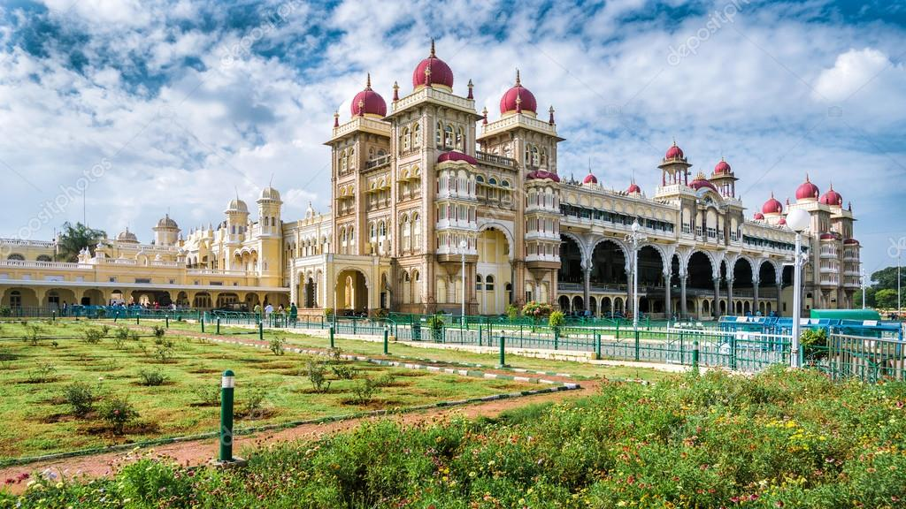

Love courage Tradition Architecturalskills and lotmore...
TAJ MAHAL - WHITE MARBLE STONE - BEAUTIFUL DREAM CASTLE
One of the most significant Mughal Empire architectural
marvels still stands in all its beauty and finesse in Agra, Uttar Pradesh
India. The Taj Mahal is a white marble built by Mughal emperor Shah Jahan in
memory of his third wife, Mumtaz Mahal.
In Arabic, the Taj Mahal is known as "crown of palaces".
Symbol of LOVE
1000 pillars temple -- elegant architecture during kakatiya dynasty
The architecturally brilliant temple was designed by the sculptors from the
Kakatian dynasty and it depicts the typical Chalukyan style of architecture. The entire temple resembles the shape of a star and the pillars have intricate carvings of artwork on them. In addition to the pillars, the walls of the temple too have fine designs on them which still makes many an artist go spellbound at the quality of workmanship that existed during those days, when technology was not even born.
Courage of Rani Rudramadevi -kakatiya dynasty
Rani Rudrama Devi (died 1289 or 1295), or Rudradeva Maharaja,
sometimes spelled Rudramadevi or Rudrama-devi, was a monarch of the Kakatiya dynasty in the Deccan Plateau from 1263 until her death. She was one of the very few women to rule as monarchs in India and promoted a male image in order to do so.
Millitary Architecture
Situated around 11 Km from Hyderabad, the fort was famous for its impenetrable structure. The fort is considered as a hallmark of excellence in military architecture. Golconda Fort is one of the grandest forts in India. Build in the 13th century by Kakatiyas, it was just a Mud fort at the start.
Mysore Palace -Mind blowing and mesmerizing Interior Architecture
An incredibly breathtaking example of Indo - Saracenic style of architecture, the Mysore Palace is a magnificent edifice located in Mysore in the state ..
